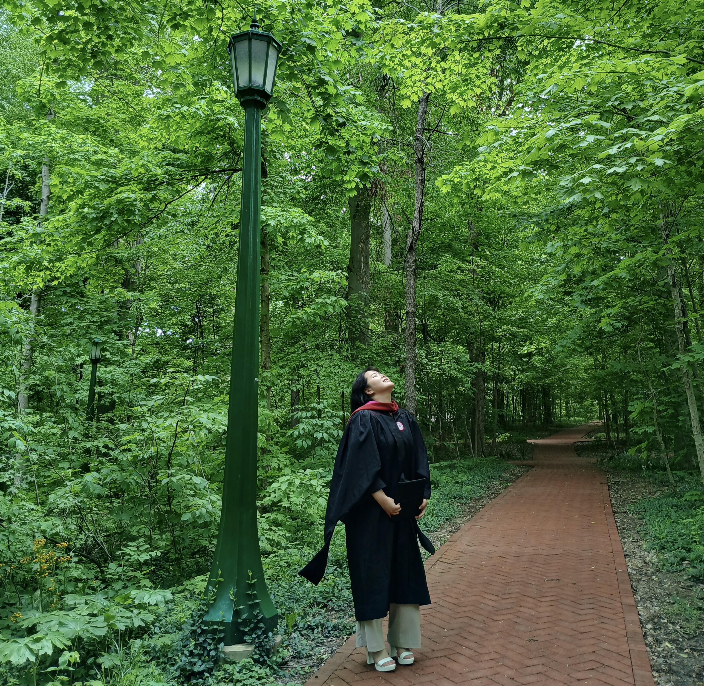
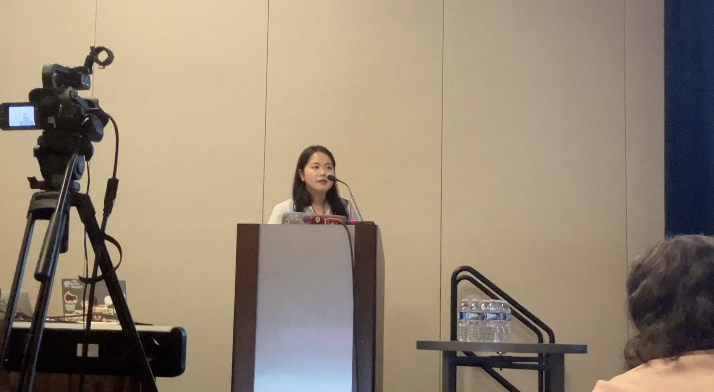
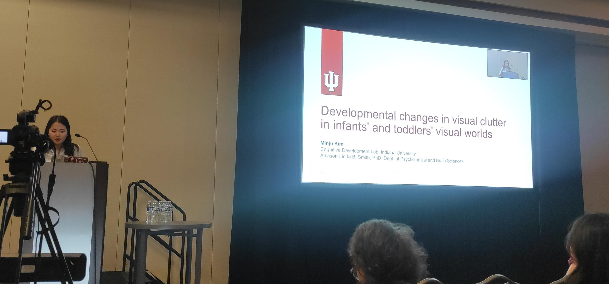
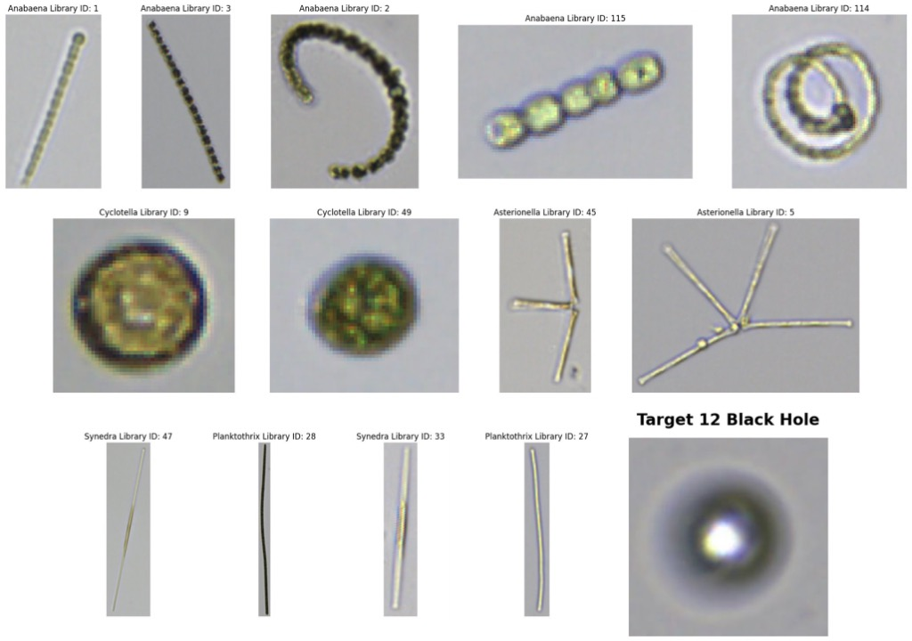
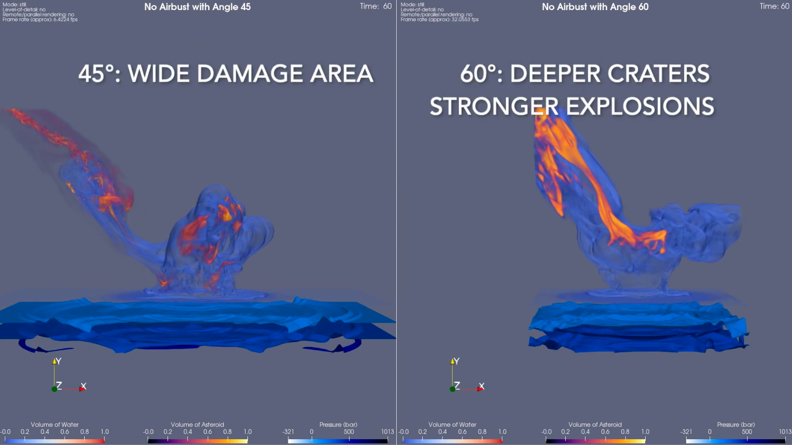
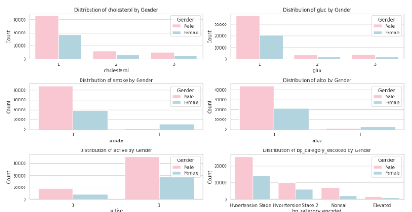
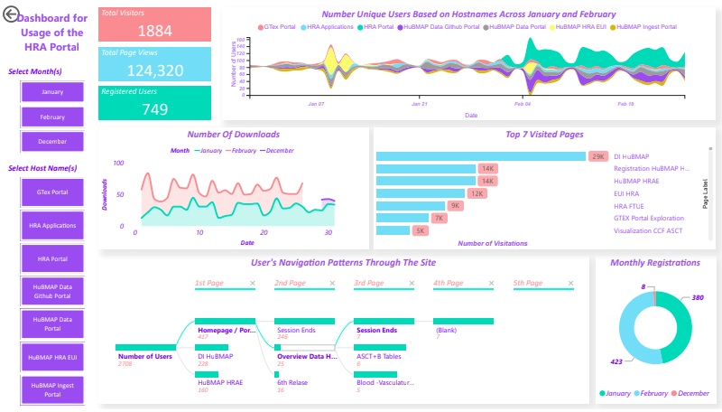

Minju Kim
I use computer vision to study what babies see.
I'm a Research Data Scientist in the Cognitive Development Lab at Indiana University Bloomington, working with Prof. Linda B. Smith. I joined the lab in 2024 and analyze video from head-mounted cameras to understand the visual experiences of infants and toddlers.
In my first-author project, I measure visual clutter across about 500,000 head-camera frames from 40 infants, work I presented as an oral talk at VSS 2026. I also collaborate with a multi-institution team on memory mechanisms in spiking neural networks, with an article in press at IEEE Computer.
I came to data science from business administration, and I'm now applying to PhD programs.

- M.S. in Data ScienceIndiana University Bloomington, 2023–25
- B.B.A. in Business AdministrationKonkuk University, Seoul, 2018–21
News
Poster accepted at WiML @ NeurIPS 2026, with a WiML Travel Grant.
Reviewing for the NeurIPS 2026 Workshop on Continual World Models.
Gave a talk on infants' visual clutter at VSS 2026 and received the Elsevier/Vision Research Travel Award.
Co-advised a student team building an infant hand-detection pipeline.
Won second place at the Luddy Hackathon with EvacSim.
Research
Is a baby's world cluttered? Mostly, no.
Infants' views lean strongly toward low clutter, and that bias fades gradually as they grow.
Drag to add clutter. This is a toy illustration, not lab data.
Do babies' visual worlds differ across communities?
Comparing image statistics from infants' head cameras in the U.S. and India.
How should a spiking network remember?
Testing memory mechanisms across vision and hearing data with a multi-institution team.
Papers & Talks
Developmental changes in visual clutter in infants' and toddlers' visual worlds
Kim, M.


Modality-dependent memory mechanisms in cross-modal neuromorphic computing
Effiong, B., Rehman, J., Roy, S., Kim, M., Tseng, C.-Y., & Nkrumah, I.
Developmental changes in the edge statistics of everyday infant visual input across two communities
McAdams, P., Colwell, A., Kim, M., & Smith, L. B.
The visual world of infants and toddlers is not cluttered
Kim, M., McAdams, P., Colwell, A., & Smith, L. B.
Modality-adaptive memory gating with embedding replay for continual learning in spiking neural networks
Effiong, B., Kim, M., Thasin, M., Rehman, J., Roy, S., Tan, V., & Nkrumah, I.
Infant egocentric scene statistics are simpler than adult egocentric and canonical natural scenes
McAdams, P., Colwell, A., Kim, M., & Smith, L. B.
Natural statistics of visual experience of infancy: US & India
Kim, M., & Smith, L. B.
Projects




Honors & Awards
WiML Travel Grant, Women in Machine Learning (WiML) Workshop, co-located with NeurIPS 2026
Elsevier/Vision Research Travel Award, Vision Sciences Society (VSS)
Second Place, Multi-Agent Systems, Luddy Hackathon, Indiana University
Faculty Assistance in Data Science (FADS) Fellowship, Indiana University
Teaching & Mentoring
Research Mentor, Computer Vision (CSCI-B657)
Co-advised three students with Linda B. Smith on detecting infants' hands in head-camera video.
Associate Instructor, Great Ideas in Computing (CSCI-C 102)
Taught 30+ students Python, Arduino, HTML/CSS, and Java through hands-on labs.
Service & Community
Reviewer, NeurIPS 2026 Workshop on Continual World Models
Judge, CEWIT Research Poster Competition, Indiana University
Member, KSEA and KWiSE (Indiana Chapter)
Student Volunteer, AATK Conference
Mentee, CEWIT, Indiana University
Skills
Say hello
The best way to reach me is minjukim023@gmail.com.